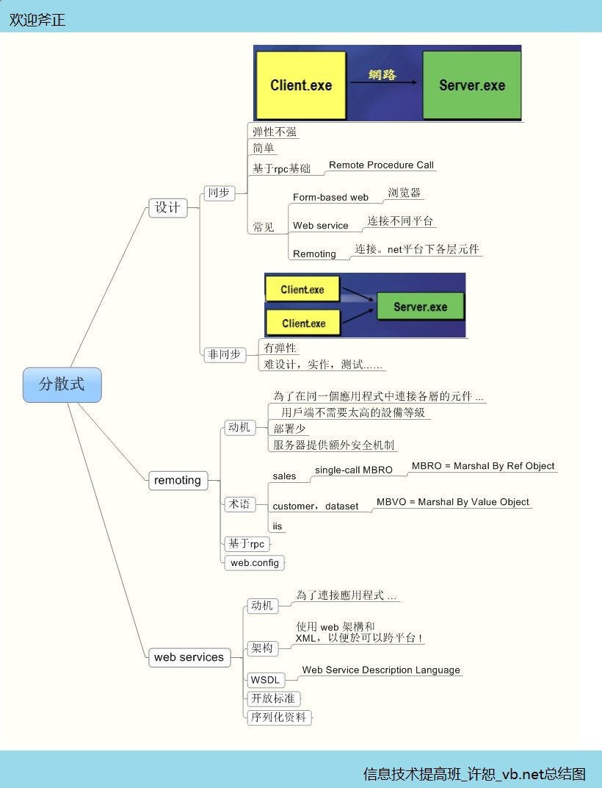

也许vb.net并不是面向对象最成功的工具，但是它的强大也是毋庸置疑的，通过vb.net接触到了几个新的词汇，本篇文章将主要就面向元件的设计、分散式应用程序和新式数据库连接展开研究。
面向元件的设计：
首先什么是元件，元件就是可以重复使用的模版，关于模版我们再以前的博客中进行过讨论，vb.net面向元件的设计，实际上是面向对象设计的另一个体现。他有优点也不乏缺点。
优点：程式碼重覆使用、支援小組開發、多程式語言、獨立更新，從 1990 開始，COM就是微軟以元件為基礎的開發模型，.NET使用一個全新的模型來取代COM，跟程式語言無關、不需要系統登錄、能偵測是否被竄改、版本控制等。
缺点：缺点正好与优点对称，只能与vb6进行有限的合作，如果使用com组件，传回型别为vb6的，容易造成型别错误，没有构造函数，多态！

分散式程序设计：
分散，分散的是什么，有简单的分散，分散显示与代码，还有一种分散比较难理解，分散的是逻辑与服务，就是传说中的解耦！这样做的目睹就是接触系统的耦合性！ 分散式的程序设计分为同步和非同步类型，同步时客户端呼叫服务端等待回应，非同步是用戶端傳送要求，然後用戶端繼續進行其它工作，伺服端執行完後再將回應傳給用戶端！
